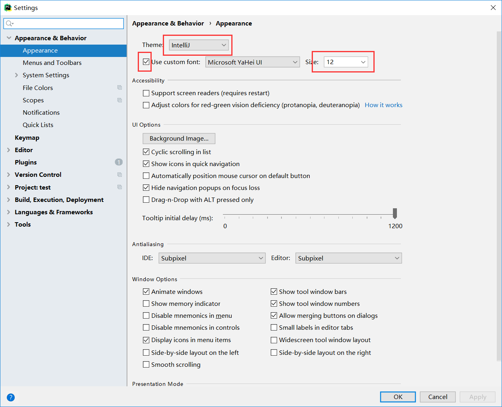
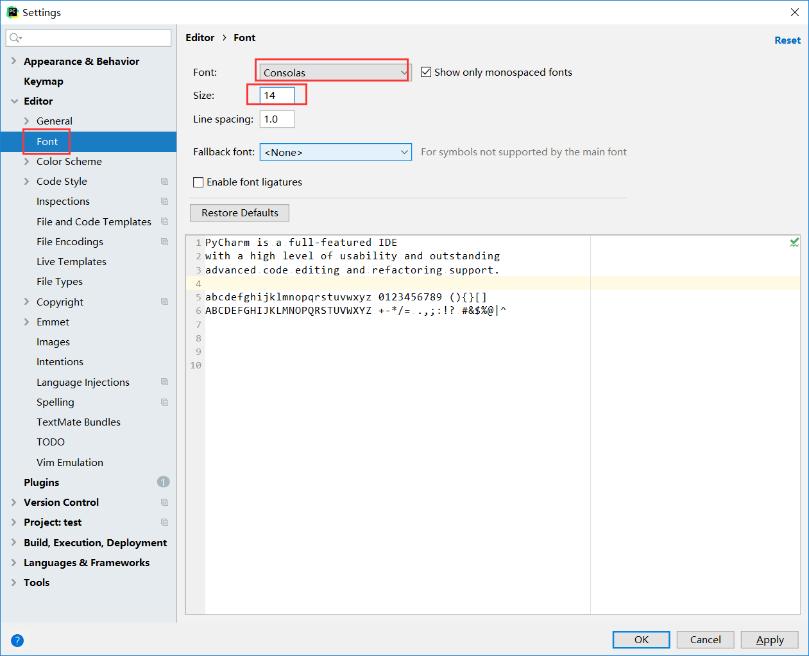
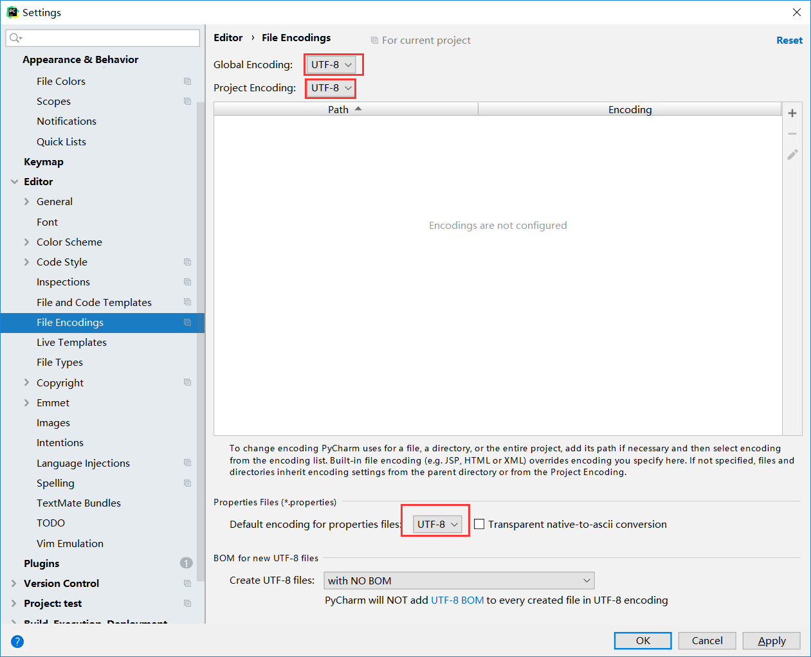
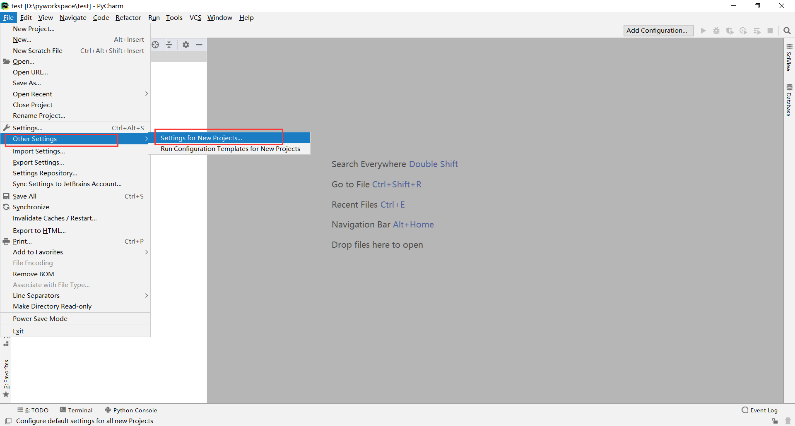
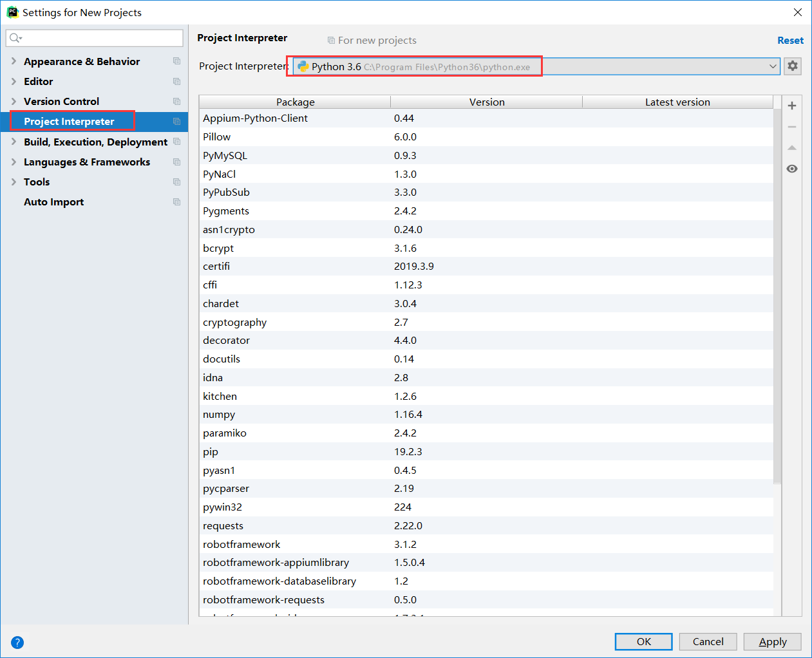
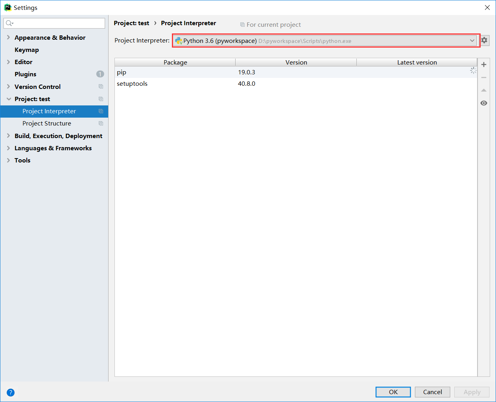
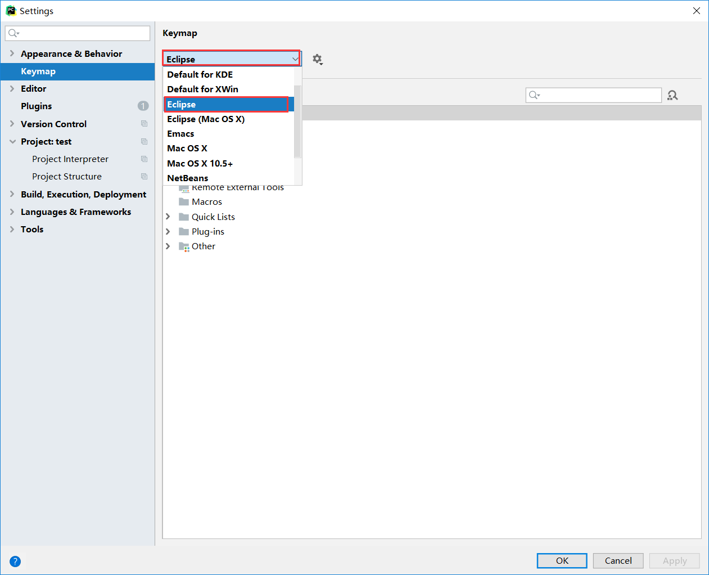
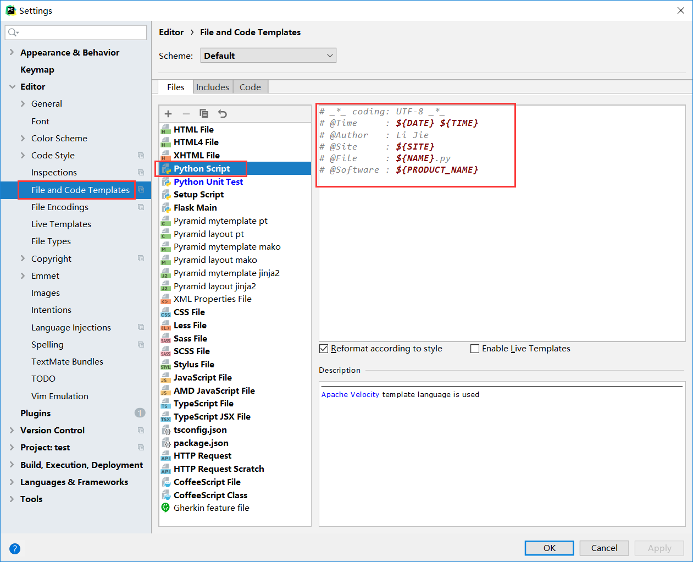

Pycharm设置
设置Pycharm为暗色皮肤主题：
File -> Settings -> Appearance&Behavior -> Appearance -> Theme -> 选择“Darcula”。
改变字体大小，勾选Use custom font:,size选择“16”。

通过 File->Setting->Editor->Font 调节，比如把size从10调成14，将font改为Consolas。

编码问题在python2时代就是一个很严重的问题。
在python3，我们需要将所有编码统一设置为UTF-8。
在 IDE Encoding、Project Encoding、Property Files三处都使用 UTF-8编码，同时在文件头添加：# _*_ coding: UTF-8 _*_

当有多个版本安装在电脑上，或者需要管理虚拟环境时，Project Interpreter提供方便的管理工具。
File->Other Setting-> Settings for new projects


File->Settings-> Project: xxx->Project Interpreter 
如果不适应pycharm的快捷键可以设置为自己熟悉的开发工具快捷键风格，比如我更喜欢eclipse的风格。
file -> Setting -> Keymap -> Keymaps -> eclipse -> Apply

可以在每一个python文件前添加时间，默认解释器，作者信息，文件描述信息等。
设置路径：File->settings->Editor->File and Code Templates->Python Script

# _*_ coding: UTF-8 _*_
# @Time : ${DATE} ${TIME}
# @Author : Li Jie
# @Site : ${SITE}
# @File : ${NAME}.py
# @Software : ${PRODUCT_NAME}